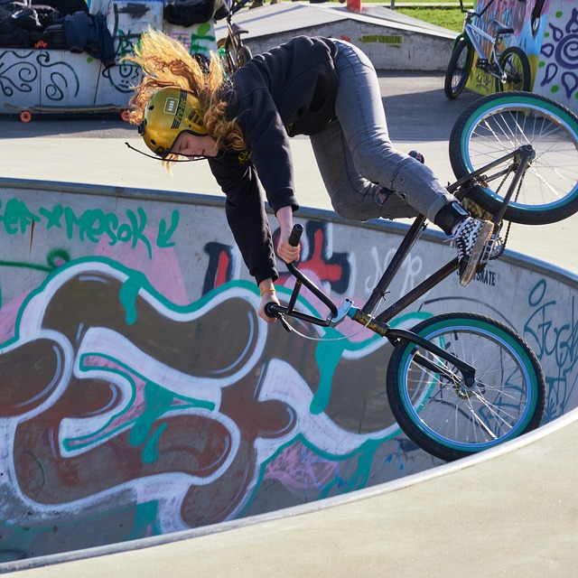

¿Qué es el Ciclismo BMX?
El BMX es una modalidad extrema del ciclismo que se practica en pistas con obstáculos, rampas y circuitos diseñados para realizar acrobacias y maniobras de alta dificultad.
Historia del BMX
El BMX nació en California en la década de 1970, inspirado en las carreras de motocross. Con el tiempo, se convirtió en un deporte con múltiples disciplinas y en una categoría olímpica en 2008.
Modalidades del BMX
- BMX Race: Carreras en pistas de tierra con saltos y curvas.
- BMX Freestyle: Acrobacias y trucos en skateparks y calles.
- BMX Dirt Jump: Saltos sobre rampas de tierra.
- BMX Flatland: Trucos y equilibrio en superficies planas.
Equipamiento Esencial
- Bicicleta BMX con cuadro resistente y ligero.
- Casco integral para mayor protección.
- Rodilleras, coderas y guantes.
- Neumáticos reforzados para saltos y maniobras.
Imagen del Ciclismo BMX
